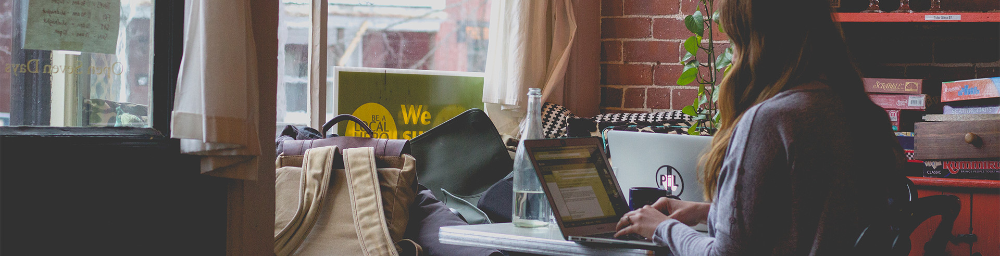

Association composée de 17 élèves de Supinfo International University Lyon. Le but est de sensibiliser les femmes au monde du numérique. Ici vous pourrez suivre l'actualité de l'association.
Cette page a été créée par l’association Femmes et Numérique LYON, qui se compose de 17 étudiants de SUPINFO INTERNATIONAL UNIVERSITY LYON. Le but de cette page est de sensibiliser la femme au monde numérique, car c’est un secteur en plein développement, mais qui, aujourd’hui ne connait que 28% de femmes dans ce secteur.
Il est donc temps de lutter contre les clichés, et les différents stéréotypes auquel fait face le monde numérique !
A travers cette page, nous vous ferons partager nos interventions, nos évènements et le développement de notre projet.